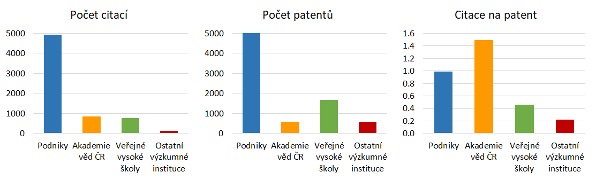

Kde vznikají nejcitovanější patenty?
Nový pohled na hodnocení patentového výzkumu
Oleg Sidorkin a Martin Srholec


Think-tank IDEA při Národohospodářském ústavu AV ČR
Studie č. XXX/2018
Listopad 2018

Oleg Sidorkin a Martin Srholec
Think-tank IDEA při Národohospodářském ústavu AV ČR
Studie č. XXX/2018
Listopad 2018
Zmapovali jsme celosvětovou citovanost patentů, které získaly organizace se sídlem na území Česka. Spočítali jsme to z individuálních údajů databáze PATSTAT. Prezentované výsledky nikde jinde nenajdete.
Citační ohlas odráží technologickou hodnotu patentu. Patent, na který nic dalšího nenavazuje, nenechal ve vývoji technologií žádnou stopu. Naopak patent s mnoha následnými citacemi možná nastartoval novou technologickou vlnu.
Není to nic světoborného. Citace patentů se běžně používají třeba v ekonomické literatuře. Je to standardní ukazatel prověřený léty praxe. Nicméně v oblasti hodnocení výzkumu v českém kontextu je to novinka.
Stejně jako jiné ukazatele pro hodnocení výzkumu se citovanost patentů potýká s nepřesnostmi, které je při interpretaci výsledků nutné brát v úvahu.
Jen některé výsledky aplikovaného výzkumu jsou patentované. Řada organizací provádí výzkum užitečný pro praxi, který v patentových statistikách není vidět. Z citací patentů je možné dělat závěry pouze o patentovaném výzkumu.
Proto je namístě vypíchnout organizace s velkým počtem patentových citací, ale vystříhat se unáhlených závěrů o organizacích, které v tom nevynikají, protože to může mít různé příčiny.
Prezentované výsledky by měly zajímat nejen manažery výzkumu, potenciální partnery v aplikační sféře anebo investory, ale i tvůrce inovačních politik. Hodnocení výsledků výzkumu, na které nepasuje bibliometrie, je totiž tvrdý oříšek.
Navazujeme na předchozí studie IDEA na příbuzná témata.
Obdélníky zobrazují jednotlivé organizace. Velikost obdélníku odpovídá počtu citací patentů dané organizace. Barvy obdélníků odlišují sektory.
Konkrétní organizaci lze vyhledat v roletkovém menu podle názvu anebo IČO nad grafem anebo vybrat kliknutím či najetím kurzoru přímo v grafu. Následně se zobrazí okénko s podrobnostmi.
Klikáním na legendu vyberete různé sektory, zobrazíte pouze organizace s nejvíce citacemi anebo zúžíte výběr na české či zahraniční citace, čímž si můžete vytvořit vlastní srovnání.
Pod grafem jsou odkazy na vysvětlivky a pro stažení kompletních podkladových dat za organizace anebo výpisu dat za nejcitovanější patenty.
Citace zpravidla začnou nabíhat až po delší době. Navíc patentové statistiky jsou zveřejňovány se zpožděním. Převážná většina hodně citovaných patentů tudíž pochází z minulého desetiletí. Prezentované výsledky poskytují pohled do minulosti.
Patenty jsou vhodné k ochraně jen určitého druhu kodifikovaných znalostí, a to zejména v chemických a technických oborech. Pro řadu jiných oborů jsou patenty jako nástroj ochrany duševního vlastnictví zcela irelevantní.
Patentové statistiky jsou jen částečně harmonizovány. Zejména záznamy o majiteli patentu obsahují nepřesnosti a mohou být i neúplné. S velkou námahou jsme data vyčistili, ale je třeba počítat s určitou chybou měření.
Názvy majitelů umožňují rozlišit ústavy Akademie věd ČR, ale pro příliš mnoho patentů bohužel nikoliv jednotlivé fakulty vysokých škol. Srovnáváme tudíž organizace různé velikosti.
Z malých rozdílů v počtu citací mezi organizacemi tudíž není radno dělat velké závěry. Doporučujeme se zaměřit na celkový obrázek, který ze srovnání vyplývá, a na vysoká čísla.
Pokud má organizace patenty, ale žádné citace, její název je k nalezení v roletkovém menu, nicméně na grafu se nezobrazuje. Při jejím výběru se okénko s podrobnosti zobrazí v pravém dolním rohu.
Domácí české citace tvoří méně než desetinu celkového počtu citací, takže výsledný obrázek zásadně neovlivňují, i když pro některé organizace je jejich podíl nezanedbatelný.
Patentové citace jsou silně koncentrovány. Deset organizací s největším počtem citací má zhruba dvoupětinový podíl na celkových citacích. Pouze dvanáct organizací nasbíralo více než sto citací.
Nejcitovanější patenty nemají jenom podniky. Mezi nejlepší organizace se prosadilo i několik ústavů Akademie věd ČR a vysokých škol.
Drtivá většina organizací má však jen několik citací anebo žádné.
Na špici výzkumných organizací jsou promíchány technické vysoké školy, velké univerzity a ústavy Akademie věd ČR s převážně biotechnologickým a chemickým zaměřením.
Jako nejlepší vychází Ústav experimentální botaniky AV ČR. Další tři ústavy Akademie věd ČR jsou v první desítce, a to včetně Ústavu organické chemie a biochemie AV ČR, který má velké příjmy z licencování patentů profesora Antonína Holého z osmdesátých let.
Mezi vysokými školami posbírala díky nanotechnologiím nejvíce citací jinak menší Technická univerzita v Liberci. Následuje České vysoké učení technické v Praze. Největší univerzity jako Univerzita Karlova, Masarykova Univerzita a Univerzita Palackého v Olomouci jsou až za nimi.
Akademie věd ČR jako celek dosahuje většího počtu patentových citací než všechny veřejné vysoké školy dohromady. Přitom z hlediska počtu výzkumných pracovníků i rozpočtu je podstatně menší.
Ostatní výzkumné organizace mimo Akademii věd ČR a vysokoškolský sektor se na poli patentových citací výrazněji neprosazují.
Podle očekávání jsou v popředí zejména zaběhnuté větší podniky z farmaceutického, automobilového, strojírenského, elektronického a chemického průmyslu.
S odstupem nejlepší jsou dva tradičně velcí hráči v podnikovém výzkumu Zentiva a Škoda Auto. Jako třetí v pořadí příjemně překvapil liberecký Elmarco, což je menší podnik v domácím vlastnictví, který prorazil se zařízeními na výrobu nanovláken.
Jinak však mezi nejlepšími převažují velké podniky pod zahraniční kontrolou. Další domácí podniky, které se alespoň těsně vměstnaly do první desítky, jsou Spolchemie a ROBE lightning.
Z malých podniků s dobrými výsledky si zaslouží vypíchnout třeba CODA DEVELOPMENT, Narex, Optaglio, Biotech progress, Agra Group anebo, Supersprox.
Některé i z těch nejlepších jako PLIVA – Lachema, IVAX Pharmaceuticals, IVAX – CR, Contipro Biotech, BHS Holice anebo FAB už patří mezi formálně zaniklé subjekty.
Abychom zjistili citace, musíme mít přirozeně i data za patenty. Nabízí se počty citací a patentů podělit. Srovnání tohoto indikátoru mezi sektory ukazuje obrázek níže.
Poměr citací na patent ukazuje jejich průměrnou kvalitu. Zároveň to naznačuje, jestli se skrze patenty chrání jen technologie, které si to opravdu zaslouží, anebo jestli se nepatentuje i za jiným účelem souvisejícím třeba s hodnocením výzkumu.
Akademie věd ČR má třikrát více citací na patent než veřejné vysoké školy a dokonce sedmkrát více než ostatní výzkumné organizace jako soukromé či resortní výzkumáky. Podnikatelský sektor vychází ze zhruba jednou citací na patent mezi oběma extrémy.
Přitom občas zaznívá, jako v nedávné zprávě NKÚ, že potřebujeme více patentů. Špičkového v praxi uplatnitelného výzkumu není nikdy dost. Avšak rozhodující je kvalita, nikoliv kvantita patentů!

Tip: Pro srovnání jednotlivých organizací si stáhněte podkladová data za organizace.
Patentovaný a potažmo aplikovaný výzkum je notoricky těžké hodnotit. Jeho relevance často závisí na faktorech, které výzkumník nemůže ovlivnit, a které s kvalitou provedeného výzkumu nemusí nijak souviset.
Citace patentů jsou jeden z mála ukazatelů, který je poměrně objektivní, souměřitelný napříč různými typy organizací a nezávisí až tolik na těchto externích faktorech.
Navíc patentové statistiky se řídí dlouhou dobu zaběhnutými pravidly patentových úřadů a podobně jako časopisecké publikace jsou veřejně dostupné v neanonymní podobě.
Do budoucna se nabízí možnost výpočty očistit o sebecitace v patentech stejných organizací, zpracovat i jména jednotlivých vynálezců a v neposlední řadě výsledky rozdělit podle oborů.
Proč citační ohlas patentů nezohlednit v multikriteriálním hodnocení výzkumu zacíleného do praxe třeba spolu se souvisejícími toky peněz a peer-review hodnocením vybraných výsledků?
Tip: Doporučujeme nad aplikací strávit delší čas a dopodrobna prozkoumat srovnání, která Vás zajímají nejvíce.
Doporučená citace: Sidorkin, O. a Srholec, M. (2018) Kde vznikají nejcitovanější patenty? Studie XXX/2018. Think-tank IDEA při NHÚ AV ČR.
Za vývoj interaktivní aplikace patří velký dík také Paulíně Očkajové a Vítkovi Macháčkovi.
Upozornění: Veškeré případné nepřesnosti a chyby jdou na vrub autorů, stejně jako názory a tvrzení ve studii uvedené. Studie vznikla s podporou Akademie věd ČR v rámci Strategie AV 21. Za cenné připomínky k pracovní verzi studie děkujeme kolegům z CERGE-EI.

Princip vládního hodnocení výzkumu, pro který se vžil název „kafemlejnek“, spočíval ve sčítání bodů, které byly přiděleny podle předem známého vzorce za jednotlivé výstupy, například články ve vědeckých časopisech. Podle těchto bodů se trojčlenkou rozdělovaly peníze na institucionální podporu vědy.
Bylo to jednoduché, transparentní a levné, ale se zrádnými vedlejšími účinky. Zásadní problém takového hodnocení spočívá v tom, že umožňuje nahrazovat kvalitu kvantitou. Za několik okrajových, ale pořád bodovaných článků, bylo v součtu možné získat stejné ohodnocení jako za špičkové výsledky, které je však řádově těžší vytvořit. Začala často bezskrupolózní honba za body. Kdo se toho neštítil, ten vyhrával, a kdo to nedělal, ten tratil.
Pro získání většího počtu bodů bylo nutné, aby byl časopis, ve kterém článek vyšel, evidován s co největším citačním indexem ve světové citační databázi. První verze kafemlejnku, která byla zavedena od roku 2008, byla štědrá jen pro články indexované ve Web of Science. Od roku 2012 nový kafemlejnek, tzv. Metodika 2013, začal rostoucí měrou bodovat i články indexované ve Scopusu.

Pro think-tank IDEA začal pracovat v roce 2015. Magisterský titul získal v roce 2016 na XXX YYY. Doktorát pak získal v roce 2017 na CERGE-EI. Od téhož roku působí v Leibniz Institute for East and Southeast European Studies. Také učí kurz ekonomie inovací na Institutu ekonomických studií na FSV UK.
E-mail: oleg.sidorkin@cerge-ei.cz
Doktorské studium absolvoval na Národohospodářské fakultě VŠE a na Centre for Technology, Innovation and Culture při Univerzitě v Oslu. Od roku 2010 působí jako vědecký pracovník na CERGE-EI v Praze. Mezi roky 2011 a 2017 zároveň působil v rámci Centre for Innovation, Research and Competence in the Learning Economy (CIRCLE) v Lundu. S think-tankem IDEA spolupracuje od roku 2013. Zaměřuje se na ekonomii inovací, problematiku inovačních systémů a otázky inovační politiky.
E-mail: martin.srholec@cerge-ei.cz
Omlouváme se, ale tato interaktivní aplikace není vhodná pro mobilní telefony. Na příliš nízkých rozlišeních - méně než 1024x768 - její čtení nemá smysl. Studii doporučujeme zobrazit na stolním počítači, notebooku či většině tabletů. Případně zkuste prohlížeč maximalizovat.
Pokud máte vhodné zařízení, maximalizujte obrazovku a aktualizujte stránku (F5).
Chcete-li si čtení nechat na později, zkuste si zkopírovat internetovou adresu a pošlete si ji na svůj osobní počítač.